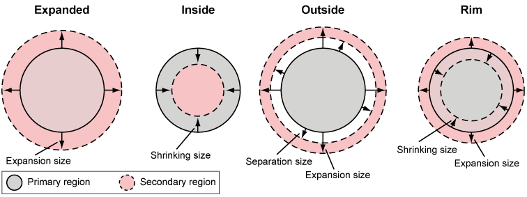

A seondary or tertiary region is a segementation that depends on a primary segmentation such as local adaptive threshold. Its contour (outline) is usually equidistant to the primary contour. Multiple seondary regions can be defined. Features are calculated independently.

Enlarged version of primary regions.
Pixel increase of the primary region (unchanged for the values ≡ 0). The expansion is stopped, when regions start touching each other.
Shrinked version of primary regions.
Pixel decrease of the primary region (unchanged for the values ≡ 0).
Area outside of the primary regions.
Pixel increase of the primary region (areas are only computed for the values > 0). The expansion is stopped, when regions start touching each other.
Pixel distance between primary and outside region (areas are only computed if separation size < expansion size).
Area around the contour of the primary regions.
Pixel increase of the primary region (areas are only computed if expansion or shrinking size > 0). The expansion is stopped, when regions start touching each other.
Pixel decrease of the primary region (areas are only computed if expansion or shrinking size > 0).
Propagate region from primary segementation.
The algorithm propagates the nuclear regions according to a distance metric that takes into account (1)
spatial distance and (2) the grey level information of the secondary channel.
This is an implementation of
Jones et al. 2005.
Uses constrained Watershed algorithm on the gradient of the secondary channel. The imposed markers are the nuclei (from the primary segmentation) as internal marker and the voronoi boundaries calculated from the internal marker, as external marker.
The method is based on a 3-level Otsu threshold and the Watershed transformation on the secondary image.
The image is prefiltered with a Gaussian filter with user-defined bandwidth.
The Otsu method will provide two thresholds in order to classify the pixels into background, intermediate and bright pixels. The user defines which of these classes are merged: if Intermediate Level to background is selected, the intermediate and background class are merged, otherwise the bright and intermediate classes are merged. If the option is selected, there are smaller and fewer objects.
User-defined Otsu-factor a. The final threshold is a * o + b, with o the Otsu threshold (either separating background + intermediate from bright or background from intermediate + bright) and b the offset. Increasing a leads to smaller and fewer objects.
User defined offset b. The final threshold is a * o + b, with o the Otsu threshold (either separating background + intermediate from bright or background from intermediate + bright) and b the offset. Increasing b leads to smaller and fewer objects.
The objects are split with the watershed transformation. Unlike the method used for the primary channel, there is no specific prior knowledge on the shape that can be used for cell segmentation. Nuclei from the primary channel are used as cell markers. The watershed transformation is calculated either on the gradient image or on the inverted image. The first is more suitable if the boundaries are clearly defined, the latter is preferable if the signal "fades" towards the cell boundaries.
The method is based on a combination of local and global threshold. Each of the two methods can be switched on and off. Cell separation is achieved by the watershed transformation on the secondary image.